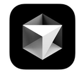
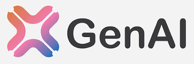
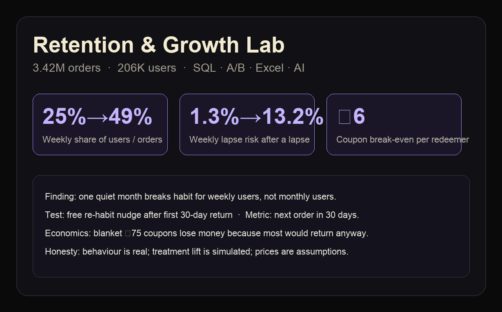
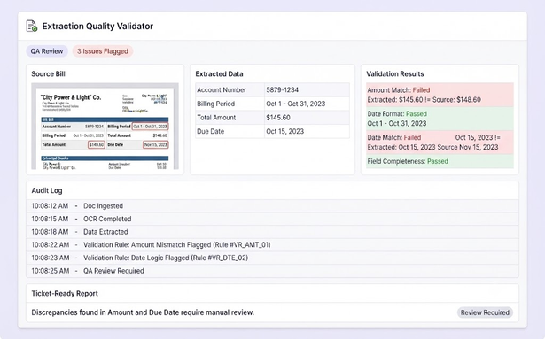
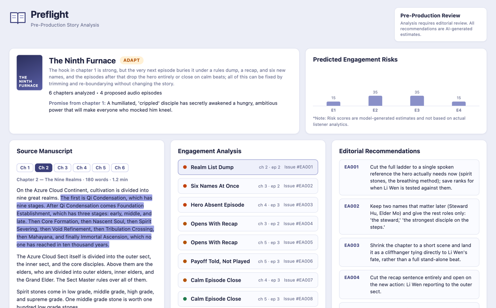

Anna University
Kumaraguru College of Technology
BE, Electronics and Communication Engineering
Open to growth & product roles
Finding Drop-offs. Designing Experiments. Making the Call.

I build with logic.
I think beyond the code.
I'm a tech-savvy professional with a passion for solving problems, understanding user behavior, and turning ideas into measurable outcomes.
With a background in software engineering and hands-on experience with AI-powered tools, I bring a technical, analytical, and solution-oriented approach to product and business challenges.
I'm particularly interested in the intersection of technology, user engagement, experimentation, and business growth.
Kumaraguru College of Technology
BE, Electronics and Communication Engineering
Contributed to ideation and strategic planning for club development and initiatives.
Gained hands-on exposure to software development, technical collaboration, and problem-solving.
Developed and maintained technical solutions, resolved complex engineering challenges, and collaborated across teams to improve system reliability, streamline workflows, and deliver efficient solutions.
Supported growth initiatives by analyzing performance metrics, identifying optimization opportunities, and contributing to strategies aimed at improving user engagement, conversion rates, and overall business performance.

 ChatGPT
ChatGPT
Cursor

Technical Skills
Non-Tech Skills
Decision Skills
Retention analysis, experimentation, unit economics, and AI-assisted execution.

A retention lab on 3.42 million real grocery orders. It finds which quiet users are actually at risk, designs the first experiment, and checks whether a coupon would pay back.
DuckDB SQL for segments and lapse risk, an A/B and geo-lift experiment toolkit, an Excel LTV / CAC / coupon model, and a Streamlit dashboard. Weekly users are 25% of people and 49% of orders. After one quiet month their chance of another quiet month jumps from 1.3% to 13.2%.
I built the full pipeline: clean fact tables, the analyses, sample sizing, the simulated A/B readout on real control outcomes, the geo methods on synthetic cities, and the unit-economics workbook. Behaviour is real. Treatment lift is simulated. Rupee figures are assumptions.
Extraction Quality Validator checks utility-bill extraction. Give it a ticket number and it fetches the bill and the extraction log, compares them field by field, and writes a ticket-ready report.
A Cursor workflow and a FastAPI app. A script pulls the bill and the log for the ticket, pairs each bill with its extraction, checks every amount, date and format against the bill, and flags what does not match. Claude is the second pass, for the judgment calls the rules cannot make.
The exact checks run as code, so the model is only called for judgment. That cut about 20–25K tokens of AI work on every audit, and the same bill always gets the same answer.


PreFlight finds where a long-form story is likely to lose people and turns that into a clear go / adapt / hold decision before production spend.
A story review tool. It reads the chapters, points to the exact lines where listeners may lose interest, splits the chapters into episodes that each end on a cliffhanger, and rewrites weak openings and endings. Every novel gets one of three results: GO (ready to record), ADAPT (fix the episode plan first) or HOLD (the story itself needs work).
I split the work in two. Python does the counting: how long each chapter is, how many new names it brings in, and where the episodes break. AI does the reading and the rewriting. Every problem it points out must quote a real line from the novel, and the tool checks that the line actually exists, so nothing is made up. All of this happens before production, not after launch.